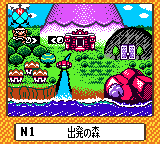
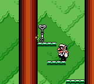
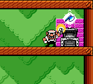
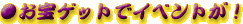
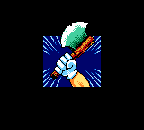
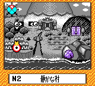

| カレー食ったか〜！気合い入ってるか〜！「ワリオランド3」はぶっちゃけた話しゲームのすすめ方がちょっぴり難しい！というより「ワリオランド2」とは趣が少し違うのだ！そこでオレ様がじきじきに説明してやるから心して読んでくれ！！ |
|
マップ画面上にはオレ様が入ることができるコースが表示されているぞ。表示されているコースにはいつでもどこでも入ることができるのだ。遊びたいコースを選んでくれ！といっても最初は「出発の森」しか行けないぞ。ここでクイズ！「N1」のNは何のNでしょう？エヌいち、エヌワンなんて犬の名前じゃないぞ。「なんちゃって」かな？「南無阿弥陀仏」かな？「ん」かな？正解はCMの後で！チャンネルはそのままだ！ |
 |
コースに入ったら、まず宝箱のカギを探そう！カギは全部で4種類あるぞ！といっても色が違うだけだ。その辺よろしくな。 しか〜し、最初から全てのカギが見つかるとは限らない！後々コースが変化したり、オレ様がパワーアップしてはじめて見つかるカギもあるのだ！ |
 |
カギを見つけたら、カギと同じ色の宝箱を探してくれ〜い！カギを持っていれば同じ色の宝箱にタッチするとお宝ゲットだ！今回のオレ様は最初は少しばかり弱っちいのだが、パワーアップできるお宝なんかがあるからガンガン探してくれ！ ここでさっきのクイズの正解を発表〜！パチパチパチ。正解は「納豆だいすき」だー！！文句あるかー！かかってこーい！（ホントはNORTH＝北のNだよ〜ん） |
 |
|  手に入れたお宝によってイベントが起こるぞ！といっても全然何も起こらないときもあるけど、あんまりがっかりしないように！そんなときは残ったカレーをカレーうどんにしてみよう！ |
 |
起こったイベントによって、新しいコースができたり、一度クリアしたことのあるコースに変化が起こったりするぞ。新しくできたコースや、変化が起こったと思われるコースに入ってみよう！取れなかった色のカギや宝箱が見つかり、新しいお宝を手に入れることができるはずだ！ |
 |